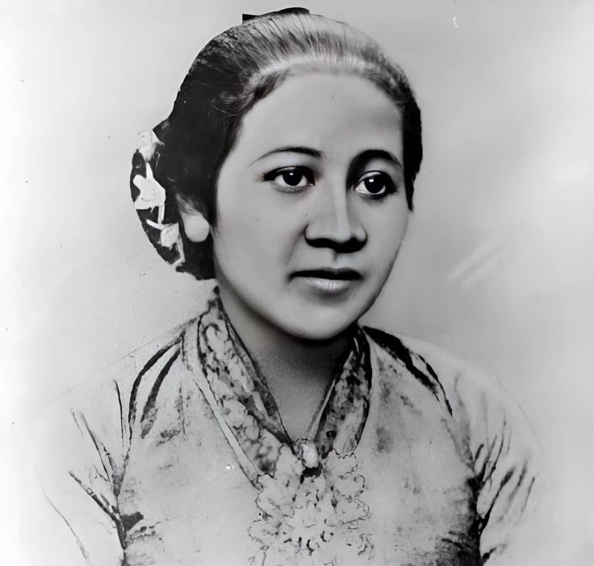
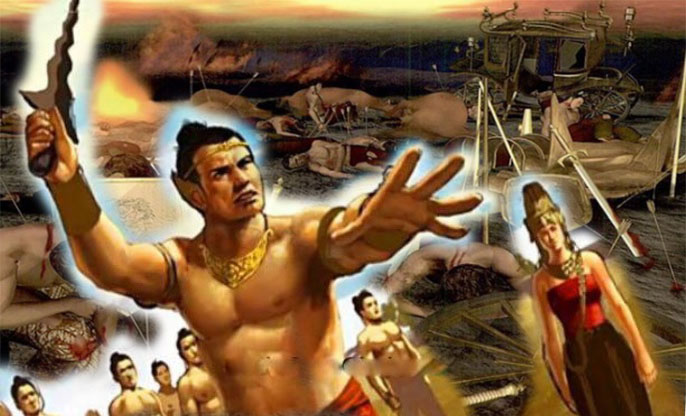
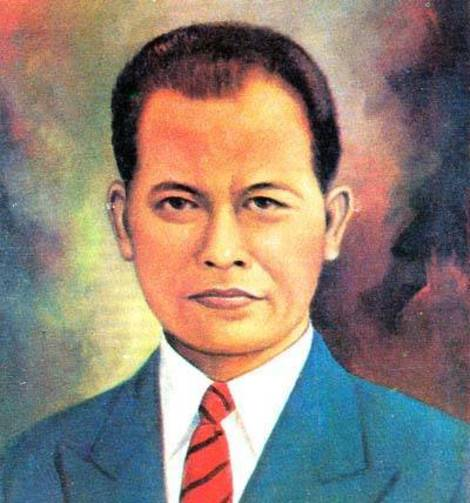

Kisah Sejarah
Klik nama provinsi
Aceh

Sultan iskandar mudah
Sultan Iskandar Muda adalah salah satu tokoh penting dalam sejarah Aceh yang memerintah Kesultanan Aceh pada abad ke-17. Di bawah kepemimpinannya, Aceh mencapai puncak kejayaannya sebagai pusat perdagangan dan kekuatan maritim di Asia Tenggara.
Perang Aceh
Perang Aceh (1873–1904) merupakan perjuangan rakyat Aceh melawan penjajahan Belanda. Perang ini dikenal sebagai salah satu perlawanan terpanjang dalam sejarah kolonial di Indonesia dan menjadi simbol semangat juang masyarakat Aceh.
Cut Nyak Dhien
Cut Nyak Dhien adalah pahlawan nasional yang berjuang melawan Belanda setelah kematian suaminya, Teuku Umar. Ia dikenal karena keberaniannya dan keteguhannya membela tanah kelahirannya hingga akhir hayatnya.Sumatera Barat

Perang Padri
Perang Padri (1803–1837) adalah konflik antara kaum ulama (Padri) dan kaum adat di Minangkabau. Perang ini kemudian melibatkan Belanda dan menjadi simbol perlawanan rakyat Sumbar terhadap kolonialisme.
Tuanku Imam Bonjol
Tokoh utama dalam Perang Padri, dikenal karena keberaniannya melawan Belanda dan membela nilai-nilai Islam. Ia diasingkan oleh Belanda dan wafat di Minahasa, Sulawesi Utara.
Sekolah Thawalib
Sebuah sekolah Islam modern di Padang Panjang yang menjadi pusat pendidikan dan pemikiran kebangsaan. Banyak tokoh pergerakan nasional berasal dari sini.Sumatera Utara

Pemuda Medan 1945
Setelah proklamasi kemerdekaan, pemuda-pemuda Medan menghadapi tentara Belanda dan Inggris dalam mempertahankan kemerdekaan. Pertempuran ini dikenal sebagai bagian dari Medan Area.
Perang Batak
Perang Batak adalah perang antar rakyat Batak dengan pasukan Belanda di Batak, Sumatera pada 1878-1907. Perang ini dipimpin oleh Raja Sisingamangaraja XII. Pada awalnya, Batak adalah salah satu wilayah di Sumatera yang belum dikuasai oleh Belanda.
Sisingamangaraja XII
Patuan Bosar Sinambela Ginoar Ompu Pulo Batu , lebih dikenal sebagai Si Singamangaraja XII (18 Februari 1845 – 17 Juni 1907), adalah pendeta-raja terakhir suku Batak di Sumatera Utara . Dalam perjalanannya berperang gerilya melawan penjajahan Belanda di Sumatera sejak tahun 1878 dan seterusnya, ia tewas dalam pertempuran kecil dengan pasukan Belanda pada tahun 1907.Jawa Tengah

Perang Diponegoro
Perang besar antara Pangeran Diponegoro dan pemerintah kolonial Belanda. Perang ini melibatkan rakyat Jawa dan berlangsung di berbagai wilayah Jawa Tengah seperti Magelang, Yogyakarta, dan sekitarnya.
Keraton Surakarta
Keraton Kasunanan Surakarta merupakan pusat kekuasaan tradisional Mataram Islam setelah pembagian kerajaan. Ia memainkan peran penting dalam sejarah budaya dan politik di Jawa Tengah sejak abad ke-18.

RA Kartini
Lahir di Jepara, Raden Ajeng Kartini adalah pelopor emansipasi wanita Indonesia. Ia dikenal karena gagasannya tentang pendidikan dan kesetaraan hak bagi perempuan pada masa kolonial.Banten

Sultan Ageng Tirtayasa
Sultan Ageng Tirtayasa adalah raja Kesultanan Banten yang terkenal karena perlawanan gigihnya terhadap VOC Belanda pada abad ke-17. Ia berjuang mempertahankan kedaulatan dan kemakmuran Banten.
Keraton Kaibon
Keraton Kaibon adalah istana peninggalan Kesultanan Banten yang dibangun untuk Ratu Aisyah, ibu dari Sultan Syafiudin. Meskipun kini tinggal reruntuhan, keraton ini menjadi saksi kemegahan masa lalu Banten.
Perang Banten vs VOC
Konflik antara Kesultanan Banten dan VOC memuncak pada abad ke-17 karena perebutan kekuasaan dan perdagangan. Perang ini mengakhiri kedaulatan Banten secara perlahan dan memperkuat dominasi Belanda di wilayah tersebut.Jawa Barat

Prabu Siliwangi dan Kerajaan Pajajaran
Prabu Siliwangi adalah raja besar dari Kerajaan Pajajaran yang memerintah di wilayah Jawa Barat pada abad ke-15. Ia dikenal sebagai pemimpin bijaksana dan menjadi simbol budaya Sunda hingga kini.

Perang Bubat
Perang Bubat adalah konflik tragis antara Majapahit dan Sunda yang terjadi pada abad ke-14, akibat kesalahpahaman diplomatik dalam rencana pernikahan antara Dyah Pitaloka (putri Sunda) dan Raja Majapahit.

Otto Iskandardinata
Otto adalah tokoh pejuang asal Jawa Barat dan anggota BPUPKI yang berperan dalam perumusan kemerdekaan Indonesia. Ia dikenal sebagai “Si Jalak Harupat” dan menjadi pahlawan nasional Indonesia.Sulawesi Selatan

Perlawanan Sultan Hasanuddin
Sultan Hasanuddin memimpin Kerajaan Gowa (Makassar) melawan penjajahan Belanda (VOC) pada abad ke-17.Ia dikenal karena keberaniannya dalam Perang Makassar (1666–1669).Dijuluki "Ayam Jantan dari Timur" karena kegigihannya di medan perang.Meskipun akhirnya kalah dan menandatangani Perjanjian Bongaya, ia dikenang sebagai Pahlawan Nasional Indonesia.
Arung Palakka
Kerajaan Bone adalah kerajaan Bugis yang kuat.Dipimpin oleh Arung Palakka, yang dulunya pernah ditindas oleh Gowa.Arung Palakka kemudian bersekutu dengan VOC Belanda untuk mengalahkan Gowa.Setelah menang, Bone menjadi kekuatan dominan di Sulawesi Selatan. Kisah ini menggambarkan konflik internal antara kerajaan-kerajaan lokal.
Penyebaran Islam
Islam masuk ke Sulawesi Selatan pada awal abad ke-17.Dibawa oleh Datuk Ri Bandang, Datuk Ri Tiro, dan Datuk Ri Patimang dari Minangkabau (Sumatera Barat).Raja Gowa dan Tallo adalah raja pertama yang masuk Islam.Setelah itu, Islam menyebar ke kerajaan-kerajaan lain seperti Bone, Wajo, dan Soppeng.Islam menjadi agama mayoritas di Sulawesi Selatan hingga sekarang.Bali

Kerajaan Gelgel
Kerajaan Gelgel merupakan salah satu kerajaan Hindu terbesar di Bali yang berkuasa sekitar abad ke-14 hingga 17. Raja yang terkenal adalah Dalem Waturenggong, di bawah pemerintahannya Bali mencapai masa kejayaan dan menjalin hubungan dagang dengan kerajaan luar seperti Makassar dan Maluku. Gelgel menjadi pusat politik dan budaya Bali saat itu..avif)
Perang Puputan Badung (1906)
Perang Puputan Badung terjadi saat pasukan Belanda menyerang Puri Denpasar. Raja dan keluarga kerajaan melakukan "puputan", yaitu perlawanan sampai mati daripada menyerah. Mereka mengenakan pakaian putih dan berjalan menuju tentara Belanda sambil membawa keris. Peristiwa heroik ini dikenang sebagai simbol keberanian rakyat Bali melawan penjajahan.1.jpg)
Perang Puputan Klungkung (1908)
Mirip dengan Puputan Badung, perlawanan terakhir terhadap kolonialisme Belanda terjadi di Klungkung. Raja Klungkung dan pengikutnya memilih gugur dalam puputan daripada menyerah. Setelah perang ini, seluruh Bali berada di bawah kekuasaan Hindia Belanda. Puputan Klungkung menjadi simbol kehormatan dan perjuangan rakyat Bali.Papua

Papua dalam Penjajahan Belanda
Sejak tahun 1828, Belanda secara resmi mengklaim wilayah Papua Barat dan membangun pos di Fakfak dan Manokwari. Namun, kekuasaan Belanda baru benar-benar dirasakan oleh penduduk Papua pada awal abad ke-20, ketika mereka mulai membangun infrastruktur dan menjalankan misi Kristen di daerah pedalaman..jpg)
Penyerahan Papua ke PBB dan Indonesia (1962–1969)
Setelah Indonesia merdeka, wilayah Papua menjadi sengketa antara Indonesia dan Belanda. Pada tahun 1962, melalui Perjanjian New York, Belanda menyerahkan Papua kepada PBB yang kemudian menyerahkannya ke Indonesia pada 1963. Pada 1969, dilakukan Pepera (Penentuan Pendapat Rakyat) yang menyatakan Papua sebagai bagian dari Indonesia, meskipun pelaksanaannya menuai kontroversi hingga kini..jpg)